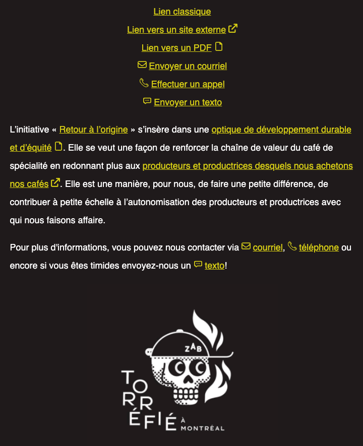

Pour cet exercice, vous devez compléter une page de blog du torréfacteur montréalais Zab Café ☕️ en la bonifiant avec des styles de liens riches.
Aperçu du résultat 👇
Couleurs 🎨
Médias
Afin d'attribuer les bonnes icônes, vous devrez avoir recours aux sélecteurs CSS avancés. Réviser les 3 derniers niveaux de CSS Diner est probablement une bonne idée.
Une seule règle de style par type de lien devrait permettre de styliser à la fois les liens affichés en liste, ainsi que ceux dispersés dans le texte.
Pseudo-éléments
::before, ::after
Sélecteurs avancés
groupes, *, >, ~, +, [attr]
Background
color, image, gradient